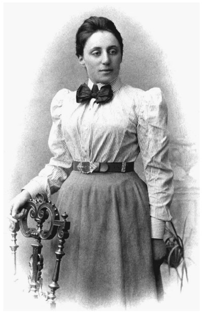

Emmy Noether: German (1882–1935)
You have probably seen an ice skater spinning on the tip of one skate, and suddenly start spinning dramatically faster as she pulls her limbs closer to her body. This faster rotation results from a redistribution of mass. You can make yourself suddenly spin faster while sitting in a rotating desk chair. Sit in the chair and hold your arms and legs straight out, and have a friend give you a gentle spin. While you are spinning slowly, quickly pull the masses in toward your body and notice that you rotate much faster. If you stick out your arms and legs, you will slow down again. The spinning desk chair is a demonstration of the “conservation of angular momentum,” which is one of the fundamental conservation laws in physics. It is similar to the conservation of linear momentum, which is more familiar to most people. Newton’s first law states that every object will remain at rest or in uniform motion in a straight line unless it is acted upon by a force. Today, we call this observation the law of conservation of momentum. The linear momentum, p, of an object with mass m and velocity v is the product mv. It is a conserved quantity, meaning that its value and direction remain constant as long as no force is applied. Similarly, a rotating object tends to remain rotating with a constant angular momentum unless it is acted upon by an outside twisting force. If an object with mass m rotates with an angular velocity w, then its angular momentum, L, is the product mwr 2, where r is the radius of the circle that the object traces out. In a closed physical system, the total angular momentum is conserved, meaning that its value and the axis of rotation remain constant. If you are sitting in a spinning desk chair with your arms and legs stretched out, these parts of your body will trace out circles of certain radii as the chair rotates. If you now pull your arms and legs closer to your body, the radii of these circles get smaller. But since the total angular momentum of the spinning chair is conserved—meaning that the value of the product mwr 2 remains constant—a smaller radius implies that the angular velocity increases. For example, if the radius is halved, w will quadruple. Thus, the increase in angular velocity as you pull your arms and legs to your body is a consequence of the conservation of angular momentum. Note, however, that we have not taken friction into account here. Friction acts like a force counteracting the rotation; it will gradually make the chair spin more slowly until it eventually stops. Linear and angular momentum are not the only quantities in physics satisfying conservation laws; other examples include energy and mass. Conservation laws have always been very important in physics, yet they often appeared somewhat miraculously

Figure 42.1. Emmy Noether.
as not-at-all-obvious consequences of the governing equations of a physical theory. However, in the early twentieth century the German mathematician Emmy Noether made a discovery that provided both deeper insight into conservation laws and a practical calculation tool to find all conservation laws within a given physical theory. Noether proved that if a physical system has a symmetry property, then there is always an associated conservation law. For example, a system is symmetric under rotations if it behaves the same, regardless of how it is oriented in space. Noether’s theorem then tells us that the angular momentum of the system is conserved. Noether’s theorem was a milestone in theoretical physics; her work continues to be relevant to the development of theoretical physics and mathematics. Albert Einstein described her as the most important woman in the history of mathematics. Let us now find out who this spectacular woman was.
Amalie Emmy Noether was born on March 23, 1882, in the town of Erlangen, Germany. Her first name was “Amalie,” after her mother Ida Amalia Kaufman, but already at a very young age she started using her middle name, “Emmy.” Both her parents came from wealthy Jewish merchant families. Emmy was the first of their four children and the only girl. Her father, Max Noether, was a renowned mathematician and a professor at the University of Erlangen. Yet Emmy did not show any particular interest in mathematics in elementary school. Furthermore, she was nearsighted and had a slight lisp, and so did not stand out in any way. At high school she studied German, English, French, and arithmetic. She was also taught to cook and clean and took piano lessons. High schools were not coeducational at that time, and the curriculum of girls’ schools was tailored to their future role as housewives. Emmy loved to dance, but otherwise she was not very enthusiastic about activities that were considered typical for girls. Mathematics was not intensively taught at her school. She finished high school in 1897, and after further study of English and French she took the Bavarian State teacher certification examinations; in 1900, she became a certificated teacher of English and French in Bavarian girls’ schools. Although she was now qualified to teach languages at girls’ schools, she decided not to pursue this path any further, but instead to aim at a higher education. Against many obstacles, Noether continued her studies at the University of Erlangen, where she was one of only two female students. Women were not officially allowed to study at universities, and therefore she had to get permission from each professor whose lecture she wanted to attend. Her focus had meanwhile shifted to mathematics, although she was still interested in studying languages as well. In 1903, she passed the entrance examination that would have allowed a male student to enter any university. She went to the University of Göttingen, which was the leading place for mathematical research in Germany at that time. While in Göttingen, she attended lectures by Karl Schwarzschild, Otto Blumenthal, David Hilbert, Felix Klein, and Hermann Minkowski. Again, she was only allowed to audit lectures as a guest, without being officially enrolled. After one semester at Göttingen, in 1904, she returned to Erlangen, when the university finally allowed women to enroll. She declared her intention to study mathematics and was then among the first women in Germany to officially study at a university. She completed her dissertation under the supervision of Paul Gordan in 1907. The natural next step would have been the habilitation, a postdoctoral qualification that was required for a professorship. Of course, this track was not possible for Emmy Noether; restrictions on women’s access to universities at these higher levels were still in effect. For the next seven years she taught at the University of Erlangen’s Mathematical Institute without pay, assisting her father and substituting for him when he did not have time to hold a scheduled lecture. She also continued her research and published papers extending the work of her thesis. The quality of her work made her name known to other mathematicians, and in 1909, Noether became a member of the German Mathematical Society and was invited to give a lecture at its annual meeting. Naturally, she would stand out at such extremely male-dominated events. During a mathematical conference in Vienna in 1913, she visited the Austrian mathematician Franz Mertens (1840–1927), whose grandson later remembered her visit, describing her as follows:
Although a woman, [she] seemed to me like a Catholic chaplain from a rural parish—dressed in a black, almost ankle-length and rather nondescript, coat, a man’s hat on her short hair . . . and with a shoulder bag carried crosswise like those of the railway conductors of the imperial period, she was rather an odd figure.
In 1915, Noether was invited to Göttingen by David Hilbert and Felix Klein, who needed her help in understanding certain aspects of general relativity, a geometrical theory of gravitation developed by Albert Einstein (1879–1955). They encouraged her to apply for a habilitation at the University of Göttingen. However, she received strong protests from numerous other faculty members. Reportedly, one of the professors asked, “What will our soldiers think when they return to the university and find that they are required to learn at the feet of a woman?”—to which Hilbert gave a now-famous reply: “We are a university, not a bath house!” Yet Hilbert’s efforts turned out to have been in vain, when the responsible authorities rejected a petition of the faculty to grant her the habilitation to become a privat-docent. Without an official position, she could not receive any payment from the university and her lectures were advertised under Hilbert’s name, with Noether as his “assistant.” Without her family’s financial support, she would not have been able to continue her research at the University of Göttingen. Soon after her arrival at Göttingen, she proved the theorem now known as Noether’s theorem, which was, however, not published until 1918. Upon receiving her work, Einstein wrote to Hilbert,
Yesterday I received from Miss Noether a very interesting paper on invariants [conserved quantities]. I’m impressed that such things can be understood in such a general way. The old guard at Göttingen should take some lessons from Miss Noether! She seems to know her stuff.
In 1918, after the end of World War I and the collapse of the German empire, Germany became a republic and women’s rights were significantly improved, including the admission of women to the habilitation process. In 1919, Emmy Noether became the first woman to be granted a habilitation, allowing her to obtain the rank of privat-docent—however, still without a salary. It was not until 1922 that she became what translates to an “associate professor without tenure,” and began to receive a modest salary. Until then she had to live off a small inheritance, adopting a frugal lifestyle that she would maintain for the rest of her life. In 1924, a young Dutch mathematician, B. L. van der Waerden (1903–1996), began working with Noether, who provided fundamental ideas of abstract conceptualization. In 1931, he published Moderne Algebra, an influential two-volume treatise on abstract algebra. The second volume is based heavily on Noether’s work. Although Noether did not seek recognition, van der Waerden included the following as a note in the seventh edition: “based, in part, on lectures by E. Artin and E. Noether.” Noether remained a leading member of the University of Göttingen mathematics department until 1933, during which time she had visiting professorships in Moscow and Frankfurt-am-Main, Germany. However, despite her major contributions in the field of mathematics, she was never promoted to full professor at the University of Göttingen. In 1933, Hitler became the German Reichskanzler and the Nazi administration immediately began to remove Jews and politically suspect government employees from their jobs, including university professors. Moreover, anti-Semitic attitudes, from both students and colleagues, made the universities hostile environments for Jewish professors. Noether was dismissed by the Prussian Ministry for Sciences, together with several of her colleagues at the University of Göttingen, including Richard Courant, who later founded an institute for graduate studies in applied mathematics in New York City, now known as the famous Courant Institute of Mathematical Sciences at New York University. When the Nazi Party came to power, a large number of German professors lost their employment, among them several future Nobel laureates. Their colleagues in the United States and in other countries sought to provide job opportunities for them, mainly to the United States and Great Britain, leading to a historic emigration of brain power from continental Europe. In fact, the rise of fascism in Europe in the 1930s put an end to Europe’s cultural and intellectual supremacy. The exiles from Germany and, later, Austria, Italy, and France, enabled the United States to gain supremacy in many sciences and mathematics. Noether was contacted by representatives of two educational institutions: Bryn Mawr College in Pennsylvania, and Somerville College at University of Oxford, England. She accepted a one-year visiting professorship at Bryn Mawr College, where she was made very welcome by Anna Johnson Pell Wheeler, who was head of mathematics and who had studied at the University of Göttingen in 1905. In 1934, Noether was invited to give weekly lectures at the Institute for Advanced Study in Princeton. However, she remarked about Princeton that she was not welcome at “the men’s university.” In April 1935, doctors discovered a tumor in Noether’s pelvis. She was operated on two days later. Although the operation seemed to have been successful at first, she collapsed a few days later and died on April 14, 1935, in Bryn Mawr, Pennsylvania. Noether never married and had no children.
Emmy Noether is consistently ranked as one of the greatest mathematicians of the twentieth century. At an exhibition at the 1964 World’s Fair in New York City, an exhibition devoted to Modern Mathematicians, Noether was the only woman represented among the notable mathematicians of the modern world. In a letter to the editor of the New York Times, published a few weeks after her death, Albert Einstein wrote:
In the judgment of the most competent living mathematicians, Fräulein Noether was the most significant creative mathematical genius thus far produced since the higher education of women began. In the realm of algebra, in which the most gifted mathematicians have been busy for centuries, she discovered methods which have proved of enormous importance in the development of the present-day younger generation of mathematicians.
Although Noether’s theorem had a huge impact on the development of theoretical physics, among mathematicians she is perhaps best remembered for her contributions to abstract algebra. In his introduction to Noether’s collected papers, Nathan Jacobson wrote that “The development of abstract algebra, which is one of the most distinctive innovations of 20th-century mathematics, is largely due to her—in published papers, in lectures, and in personal influence on her contemporaries.”